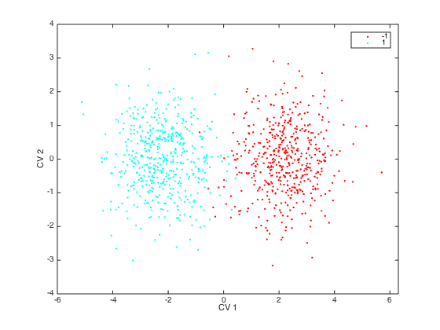
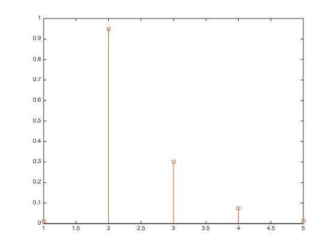
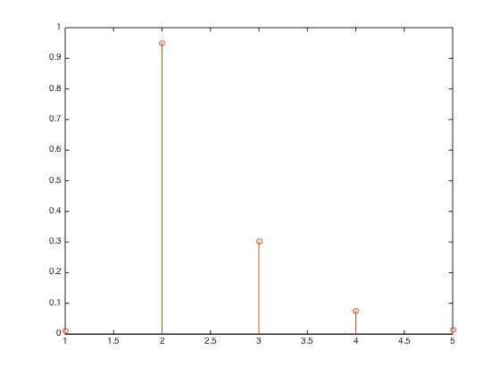

Example script for rMANOVA analysis
This example shows how to fit an rMANOVA model, run a permutation test and construct relevant plots.
The main idea of rMANOVA is to replace the sample estimate of the within-group covariance matrix by a shrunken version. Different prior structures for the covariance matrix can be specified, namely: 1. Average variance 2. Unique variance
Contents
Specify data
mu1 = zeros(5,1); mu2 = zeros(5,1); mu2(2) = 2; mu2(3) = 10; Sigma = eye(5); Sigma(3,3) = 200; Sigma(1,2) = 0.9; Sigma(2,1) = Sigma(1,2); X1 = mvnrnd(mu1,Sigma,500); X2 = mvnrnd(mu2,Sigma,500); X = [X1;X2]; Label = ones(1000,1); Label(501:end) = 2; variable_names = ['X1';'X2';'X3';'X4';'X5']; [h,ax,bigax] = gplotmatrix(X,[],Label,'br','o*',5,'off','variable',variable_names,variable_names); set(ax,'FontSize',20');

Calculate model
1. Add linstats_2006 folder to path
work_dir = pwd; linstats_path = [work_dir,filesep,'linstats_2006']; addpath(linstats_path); %
2. Load default rMANOVA options
options = rmanova('options'); % Note that options.lambda = empty. This means that the algorithm itself determines the best amount of % shrinkage of the form (lambda*T+(1-lambda)Sigma_w), where T is a prior % covariance structure. Note that the MANOVA model is obtained when lambda % = 0 (only when the number of samples is smaller than the number of % variables). The ASCA model is obtained when lambda = 1. %
options.target = 'unique_var'; % Options are 'average_var', 'unique_var' % Specify shrinkage target. Use one of the two options listed above. % % The options structure also allows to specify the type of SSQ correction % that is used for analysis of unbalanced data (options.sstype). Type III % corrections is the default. A specific model that only tests certain main % effects and interactions can also be specified in options. (See % linstats_2006b toolbox manual for more information.) %
3. fit model
stats = rmanova(X,options,Label); % Same result as manova1 when lambda = 0; % % If you want to study the effect of more factors just insert the label % vectors consequtively, i.e. % rmanova(X,options,[],Factor1_label,Factor2_label).
Extra info: The stats structure contains the output of the model
MODEL INFO stats.info can be inspected to lookup the factor names, the levels for each factor, and the actual model that was fit (equation 2 in paper). Stats.labels contains the columns from the designmatrix corresponding to each term in the model description (note that the intercept is ignored).
DATA stats.data contains the raw data, the fit by equation 2, and the residuals. Note the fit given by each term of the model (main effect or interaction) is saved seperately. For example stats.data.fit(:,:,1) contains the estimated mean responses due to the first main effect.
stats.dmat contains the designmatrix
% stats.shrink contains information of the shrinkage estimate of the within-group sums-of-squares matrix. Note that in this example stats.lambda is close to zero indicating that not much shrinkage was applied. This is expected due to the large number (1000) of training samples in the simulated data set.
stats.tests contains the output of four statistical tests, namely Wilks lambda, Pillais trace, Hotelling-Lawley Trace, and Roy's Max Root. The rows in stats.test correspond to these four test and each column corresponds to a term in the model (main effect or interaction).
THE FOLLOWING OUTPUT IS ONLY STORED WHEN OPTIONS.EXTRA = 1
Stats.canon_var contains the raw and standardized canonical variates for each main effect or interaction. Note that the standardized canonical variate is referred to as a discriminant function in the paper.
stats.scores contains the projections of the mean-centered data onto the canonical variates.
SS The different sums-of-squares matrices are saved in stats.SS. stats.ss.hyp contains the between-group matrices corresponding to the different main effects and interactions of interest. For example, stats.ss.hyp(:,:,1) contains the ss matrix of the first main effect.
Significance testing via permutation testing
We permute the raw data. Note that restricted permutations may give more exact results for complicated experimental designs. See e.g. the papers of anderson and ter braak for a thorough discussion on this topic (Anderson, Marti, and Cajo Ter Braak. "Permutation tests for multi-factorial analysis of variance." Journal of statistical computation and simulation 73.2 (2003): 85-113.). 1. - save observed test statistic (here we use Wilks lambda);
Wilks = squeeze(stats.tests(1,1)); % 1st row in stats.test indicates wilks lambda, 1st column specifies that we investigate the first main effect. %
Run a full permutation test
options.extra = 0; %Only store required output to increase computational speed iter = 1000; %1000 permutations [nobj,nvar] = size(X); for i = 1:iter-1 Y_perm = X(randperm(nobj),:); stats_perm = rmanova(Y_perm,options,Label); Wilks_null(i,1) = stats.tests(1,1); end %
Compute p-values
p_value_full = 1 - (length(find(Wilks <= Wilks_null))+1)/(iter+1); % Smaller value of Wilks lambda is bigger group difference % p = 9.9900e-4; clearly a significant group difference. % Note smaller values of Wilk's lambda indicate larger differences. For the % other tests this is the other way around and the line should be changed % to p_value_full = 1-length(find(test >= test_null))+1)/iter;
Plot results.
To save canonical variates and scores the model has to be run with options.extra = 1;
options.extra = 1;
options.lambda = [];
stats = rmanova(X,options,Label);
%
Plot canonical variate to study which variables contributed to the model.
figure; stem(stats.canon_var.raw(:,1)); xlabel('Variable'); ylabel('Coefficient'); % Note that stats.canon_var.raw is of form (i,j,k) when more factors and % interactions are studied. i indicate the variables, j the jth CV for % factor or interaction k (see stats.info.model to determine the label of k). figure; stem(stats.canon_var.std(:,1)); xlabel('Variable'); ylabel('Standardized coefficient'); % Note that the minor contribution of the 3rd variable can be detected when % the standardized CV's are inspected. The standardized CV is referred to % as a discriminant function in the paper. %


Plot scores
figure; gscatter(stats.scores.std(:,1),stats.scores.std(:,2),stats.info.labels{1});
xlabel('CV 1'); ylabel('CV 2');
 Significance of an effect should always be judged in the basis of the permutation test and not the score plot itself. Especially with data with thousands of variables the score-plot can provide an overoptimistic view of the group-separation. In such cases it can be usefull to consider only a subset of the variables (e.g. the top 250 as identified by the CV) when calculating the scores.
Note that is is meaningful to inspect g-1 CV's and scores where g is the number of levels. In this case that means that inspection of only the first CV should be enough to observe group separation. This is indeed the case. This can also be observed by inspection the eigenvalues corresponding to the test who are a measure of the standardize distance between the groups along the direction of the CV.
stats.eigval(1:2,1);
% The first eigenvalue is clearly larger than the others.
Results of ASCA model
options.lambda = 1; stats_ASCA = rmanova(X,options,Label); figure; stem(stats_ASCA.canon_var.std(:,1)); xlabel('Variable'); ylabel('Coefficient'); % Note that variable 1 is not marked as important by the ASCA model. for i = 1:5 [p, table, stats_anova] = anova1(X(:,i),Label,'off'); p_anova(i) = p; F_anova(i) = table{2,5}; end figure; stem(sqrt(F_anova)/norm(sqrt(F_anova))); hold on; stem(abs(stats_ASCA.canon_var.std(:,1))/norm(stats_ASCA.canon_var.std(:,1))); % Note that the coefficients of the ASCA model correspond to those of a % t-test
 
